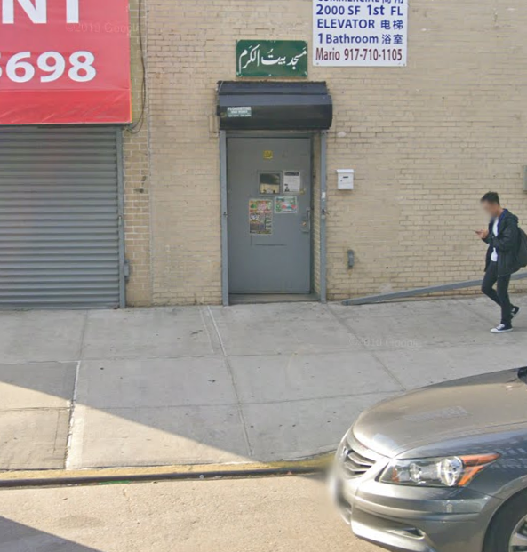
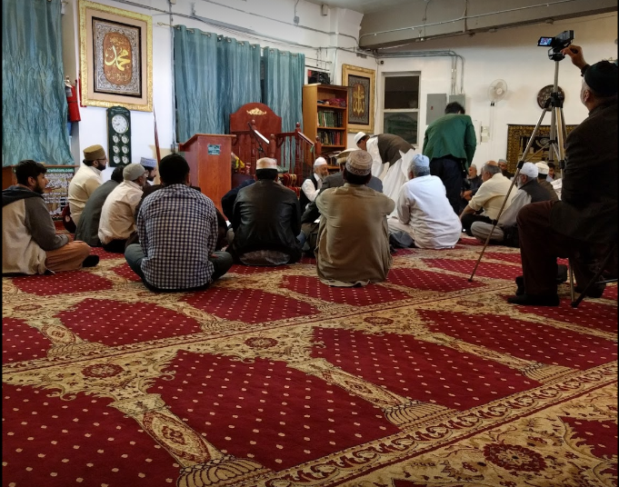
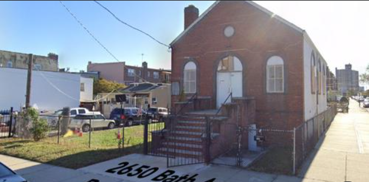

Current Location: 8140 New Utrecht Ave 2nd FL, Bklyn NY 11214
Masjid Bait-ul-Karam was founded in the year 2007 and is located in Bensonhurst. It has always been out goal to help others and make a peaceful environment for everyone. This mosque continues to make the area a better place. We hold 5 time prayers daily and Jummah prayer every Friday. In ramadan we hold Iftar and taraweeh as well. We also hold gatherings many times during the year, for zikar and remembering our Prophet (PBUH). It has always been out goal to help everyone that is in need and provide any opportunity for the people to gain more knowledge of deen.
As we all know, Covid has affected the lives of everyone, financially and socially. Our mosque had been closed for a long time for safety, and that led to the collection of very little funds.
This masjid has continued to strive. However, due to a high rent, it has become very difficult to maintain the place, and thats why we have decided to move. From all the funds we have collected ever since 2007, we have decided to come together and with the help of more people, we can make this happen.
“Whoever builds a mosque for the sake of Allah, then Allah will build for him a house like it in Paradise.” – [Sahih al-Bukhari, Sahih Muslim]
Converting an Old Church into Masjid Bait-ul-Karam.
Brothers and Sisters we are reaching out to you because we have bought a church building at 2650 Bath Avenue, Brooklyn NY that is valued at $825,000 on cash deal to avoid any interest.
This is a current picture of the property. Over the course of next 2 months, we will re-model this place and turn it into a mosque. Inshallah, we have your support.
A down payment has already bee made. Furthermore, we have already generated approximately $600,000 for this noble cause. We are now in need for another $225,000 by the end of July, 2021. Therefore, we are in need of help from you and your relations/contacts so that we can achieve this goal. Please donate generously and reach out to your fellows.
May Allah bless your soul and grant you the utmost rewards for this endeavor.
For Direct Deposit
Zia-Ul-Ummat Foundation Inc.
For any questions or concerns, please contact Syed Mir Hussain at 917-592-2518 or email him at smh292@yahoo.com. Thank You!
Click the videos above to learn more. (language: Urdu)